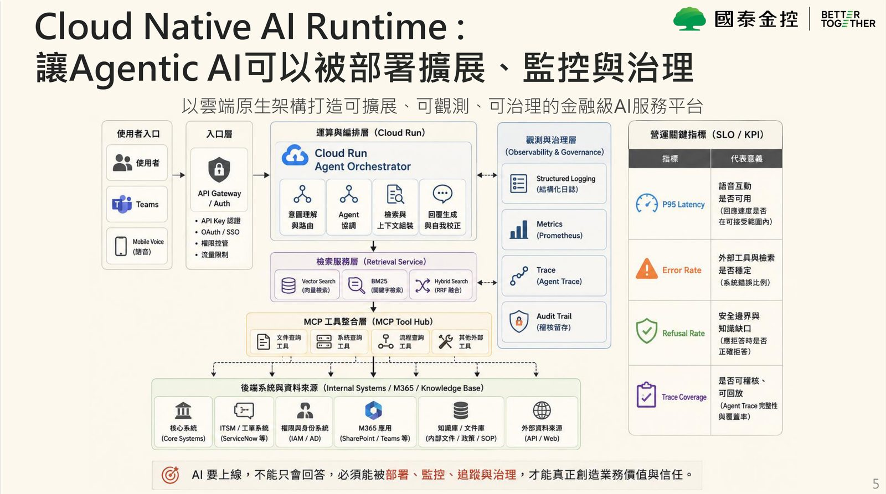
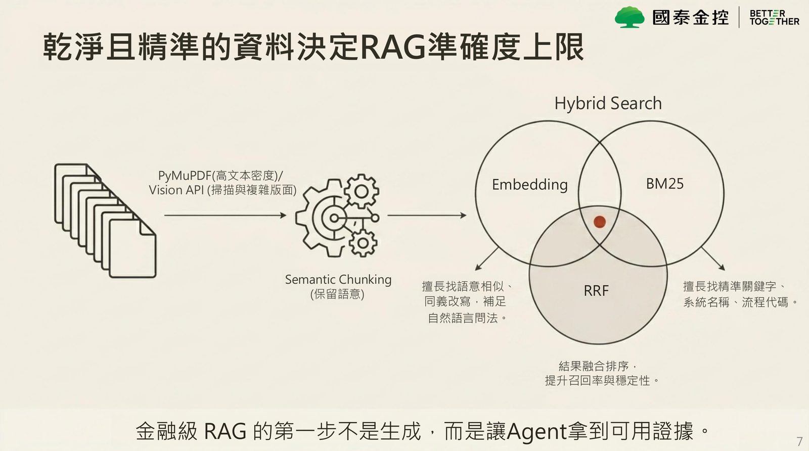
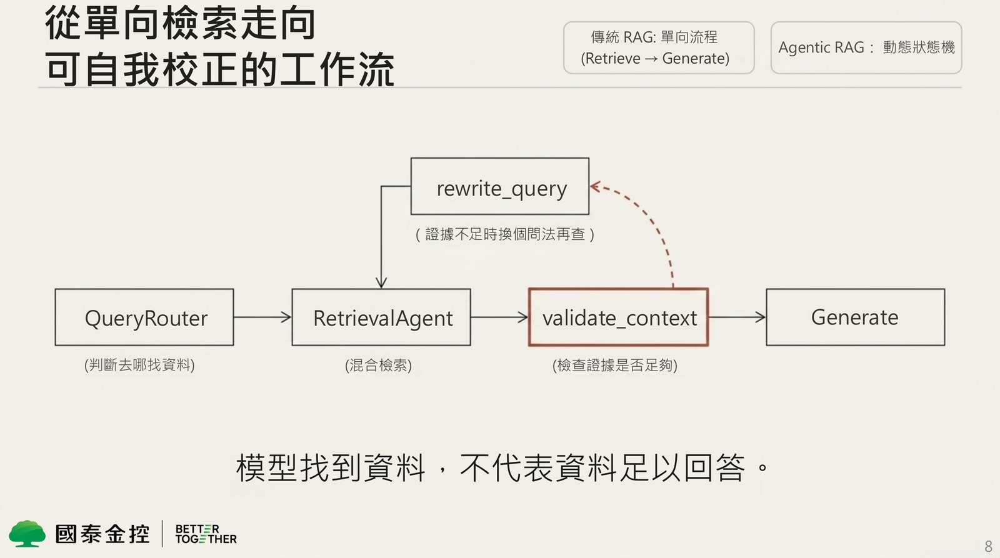
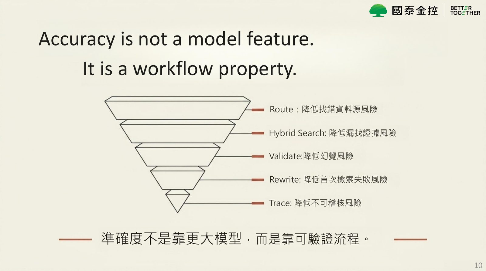

摘要
本演講深入探討金融業生成式 AI 如何突破 PoC 階段、邁向金融級營運現場的關鍵路徑，點出金融落地面臨的合規、整合與延遲等三條生死線。技術上，展示了「金融級 Agentic AI 中樞」的平台工程架構：利用 MCP (Model Context Protocol) Hub 統一封裝內部系統，解決客製化 API Spaghetti 痛點並保留 Tool Trace；數據端採用混合檢索（BM25 關鍵字與語意 Embedding），並經 RRF 融合排序；流程上以「動態狀態機」重構傳統單向 RAG，納入 `validate_context` 驗證與 `rewrite_query` 改寫，並對高風險任務導入人機協同（Human-in-the-loop）與明確保證拒答機制。實測顯示，Agentic RAG 可將準確率由傳統 Naive RAG 的 87% 提升至 98%，為金融業提供了具備可稽核軌跡（Agent Trace）的 AI 系統運作範式。
重點整理
- 金融 AI 落地三條生死線：合規性（資料主權、稽核軌跡）、整合性（跨系統跨部門）、即時性（高品質 RAG 的延遲與成本挑戰）
- AI 專案常卡在 PoC 的三個斷點：系統孤島（用 MCP 解決）、線性 RAG 不可驗證（用 Agentic RAG 工作流解決）、黑盒 AI 無法稽核（用 Agent Trace 解決）
- RAG 資料前處理採 Hybrid Search（BM25 + Embedding + Semantic Chunking + RRF 融合排序），並用 PyMuPDF 與 Vision API 處理高文本密度與複雜版面文件
- Agentic RAG 為動態狀態機，包含 QueryRouter、RetrievalAgent、validate_context（證據充足度檢查）與 rewrite_query（證據不足時換問法重查），並在證據不足時明確拒答或轉人工
- 在 100 題 RAG_Benchmark 實測中，Agentic RAG 加權準確率達 98.0%、嚴格正確率 96.0%，平均延遲 3.56 秒，優於 Naive RAG（87%）與 Hybrid Search only（83.5%）
重點圖片／架構圖




金融 AI 落地的三條生死線
講者以客戶現場 IT 作業問題為引子，說明真正能上線的金融 AI 系統必須聽懂自然語音、判斷證據充足度、查證內部知識、完整留存追蹤紀錄並具備拒答機制。演講指出金融 AI 落地面臨三條生死線：合規性（資料主權、稽核軌跡、可追溯性）、整合性（跨系統、跨部門、跨資料源）、即時性（高品質 RAG 帶來的延遲與成本挑戰），核心問題不在於做不出 AI，而在於能否通過真實營運條件的檢驗。
AI 專案卡關的三個斷點與平台級解法
講者分析 AI 專案常卡在 PoC 階段的三個斷點：表面上是系統孤島（每個 API 都要客製串接），真正問題是 Agent 無法規模化使用工具，解法是導入 MCP（Model Context Protocol）；表面上是線性 RAG，真正問題是缺少自我校正與證據檢查、回答看似合理但不可驗證，解法是 Agentic RAG 工作流；表面上是黑盒 AI 被稽核資安法遵擋下上線，真正問題是無法解釋資料與工具來源，解法是 Agent Trace。講者強調突破這三個斷點需要的是平台工程，而非單一模型的優化。
MCP：讓企業工具變成 Agent 可治理的能力
傳統整合方式下，每接入一個系統（M365、內部工具、資料庫）就需要多一組客製 API，成本隨場景數量線性上升，形成「API Spaghetti」。透過 MCP Hub 將企業內部系統包裝成標準化工具介面後，多個 Agent 可以一致的方式呼叫這些系統，並保留完整的 Tool Trace。講者強調 MCP 不是炫技，而是讓 AI 能夠安全、標準化地使用企業工具的關鍵基礎設施。
從線性 RAG 到 Agentic RAG 動態狀態機
金融級 RAG 的第一步是資料前處理：透過 PyMuPDF 處理高文本密度文件、Vision API 處理掃描與複雜版面，並以 Semantic Chunking 保留語意，結合 BM25（擅長精準關鍵字）與 Embedding（擅長語意相似）兩種檢索方式，再以 RRF 做結果融合排序提升召回率與穩定性。在此基礎上，Agentic RAG 從傳統單向的「Retrieve → Generate」流程，進化為包含 QueryRouter（決定去哪裡找資料）、RetrievalAgent（混合檢索）、validate_context（檢查證據是否足夠）與 rewrite_query（證據不足時換個問法重新查詢）的動態狀態機，並在高風險任務或證據仍不足時觸發 Human-in-the-loop 或明確拒答，每一個判斷都留有 Agent Trace 稽核軌跡。講者總結：準確度不是模型的特性，而是工作流程的屬性，Route、Hybrid Search、Validate、Rewrite、Trace 分別對應降低找錯資料源、漏找證據、幻覺、首次檢索失敗與不可稽核等五種風險。
Benchmark 實測數據與從文字到語音的實戰驗證
為了讓準確率可信，團隊建立四級評分標準（正確、部分正確、錯誤/不安全、拒答正確），並以涵蓋高頻 FAQ、同義改寫、應拒答題、陷阱題、邊界題的 100 題 RAG_Benchmark 進行測試。結果顯示 Agentic RAG 加權準確率達 98.0%、嚴格正確率 96.0%、寬鬆命中率 100%，平均延遲 3.56 秒（P50 3.59 秒、P95 6.19 秒），明顯優於 Naive RAG（87%）與僅用 Hybrid Search（83.5%）；其中邊界題正確率僅 86.7%，被列為下一階段優化重點。演講最後展示平台已從文字問答走向即時語音支援的實戰驗證，說明「快，是體驗問題；準，是信任問題」，唯有具備可拒答、可追蹤、可稽核能力，才能真正解決金融業 AI 上線的核心問題，下一階段的競爭將是營運系統本身的競爭。